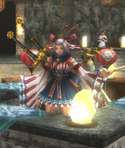
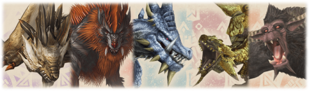
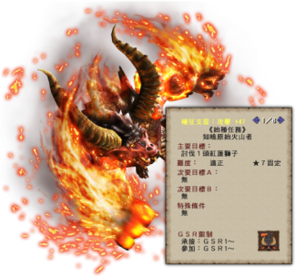
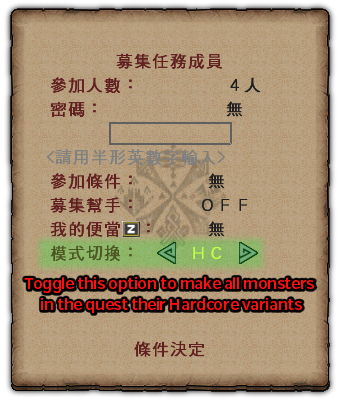

Upon hitting HR7 by completing the two Supremacy level urgents you can begin G Rank, you can do this by talking to the G Rank Guildie in the town square who is holding an umbrella. You will have to repel a Shantien as your urgent.
The quest takes place on an airship and is pretty straight forward. The gong will cause Shantien to collapse unless it is doing certain actions and you can gather ballista binder ammo from the box on the ground to reel it in when it flies off ship.
When you fully progress to G Rank there are a few things that you should be immediately doing. The first is getting every GSR and every Extreme Style, there is absolutely no reason to hold off claiming either of these.
Claiming them is a simple matter, if you have any weapons without them you simply need to approach the Guild Master and she should immediately progress you to GSR as well as unlock all the Extreme Styles.

Extreme Style is the best style to use for all weapons at all times outside of niche and gimmick use. You should really always be in Extreme Style at G Rank.
To activate Extreme Style in each weapon you should visit the smith and access the Equipment Box. On this you should choose the following options:
變更裝備 > 裝備秘傳書 > Weapon > 裝備秘傳書 > 型態 > 極之型
You should do this on every weapon type in one go just so you can be sure you have access to the most flexible movesets at all times.
You should also check the Purple Entrance NPC for anything that is available for you now that you have hit G Rank, there is no consistent set of awards but you can get a number of useful materials and potentially weapons from this so it is definitely worth doing.
After this, the most important thing is to start on the Hunter Navigation tasks. These introduce G Rank very well as well as mechanics not properly taught throughout HR at this point and will give you rewards and materials that will really help you with getting your footing at G Rank.
The Hunter Guide can be pulled up by choosing its option in the menu (獵人導引), by pressing Shift+C or by pressing R1+R2. This will bring up a dialogue from which you can choose HR, GR or Other tasks.
When you first hit G Rank you will unlock the first set of GR Tasks as well as Sigil and Conquest tasks. The most important are those in the GR Tasks (GR用) section which cover your first steps at G Rank.
For Task 1 you literally only need to pull up the Hunter Guide menu and then hit X/Square on Pad (XB360) or Z on Keyboard to view details, this will immediately reward you the rewards for the task which can be claimed by hitting confirm.
The rewards are Cheques worth 1,000 G Zeny each (波爾多卡牌紫), which you should immediately sell using the Sell Items (出售道具) option on either your box or a shop NPC. They are visually purple tickets. All G Rank equipment and content runs on GZeny, it functions identically to Zeny but you start fresh with nothing but that given to you available.
After selling your tickets you should bring up the menu again, highlight Task 2 and hit whatever your confirm button is. This will cause the arrow icon to disappear and activate task tracking. Simply talk to the G Rank Quest NPC to pull up the appropriate quests for you to take. The second task itself is simply crafting the G Newbie Set (入門G) and equipping it.
Each run of the quest will give you all the materials to both create and push a single piece to G Lv7. Simply do the quest five times and then upgrade and equip the pieces. Although creating G Armour uses a new option, upgrading armour uses the same option regardless of armour type.
After this Task 3 is to simply upgrade the pieces further to GF Lv7. Like the previous task you simply need to activate quest tracking and run the quest it automatically pulls up on the G Rank NPC five times.
This task should just be hitting either Z on keyboard or X on a Pad to view the description.
The second G option on the blacksmith will convert any armour that can be turned into a decoration into one if it is at Lv7 of any tier (G Lv7, GF Lv7 or GX Lv7)
You will need to carry out this process in a later step so don't worry too much about it for now
Task 5 is to hunt the G★7 monster Gurenzeburu, the same one you had to hunt for your Key Quests at HR2. G Rank hunts use a Defense reduction mechanic, for every star above ★1 you will lose 150 Defense, this means that a ★7 quest which is naturally 6 stars above, you will lose 900 Defense (6 x 150). This is a pretty huge reduction which can easily leave you at 0 Defense.
Recently the newbie servers have a fixed quest that is ★1 regardless, this quest works perfectly well for the above but you obviously do not need to lower the Defense reduction.
To counter this reduction, you should reduce the difficulty rating of the first Gurenzeburu you fight. This can be done from the screen that prompts you to confirm you are willing to spend GZeny on the quest by pressing either F on Keyboard or L1 on Pad.
Reducing the star rating drastically decreases your rewards and can make it so carves give literally no returns. You should only use this option for quests you need to complete for either Hunter Guide tasks or the Diva Quests storyline.
Even with the difficulty lowered, Gurenzeburu is a fairly strong monster and hits pretty hard. Do not get too discouraged if you cart to him. If you feel you are not up to the task, you can also use one of the Halk pots the first task gave you (元氣之源) which will also reduce all damage by 70%.
After you have successfully slain a Gurenzeburu you will be able to claim Task 5's rewards, this is simply everything you need to create a Gurenzebeuru Chest Piece
Task 6 is making the chest piece which can be done from the Blacksmith in the G Chests option, armour sorts by rating and type so his armour will be near the last page. Make a Blademaster chest even if you are a gunner, you are not going to use this armour piece yourself, you are simply going to convert it into a decoration.
DO NOT UPGRADE THE GUREN CHEST TO GX LV1 OR HIGHER!
You will find yourself stuck and needing to waste time on arena quests or N Points which are scarce!
Task 7 is simply upgrading the piece you just made to GF Level 7 while Task 8 is converting the piece (at GF Level 7) into a decoration. The converting of decorations has its own option that is fairly obvious in the smithy, it is the option with G in it in the Armour Section that is not crafting.
With all these tasks completed and the rewards claimed, you will have 10 Gurenzeburu GF Blademaster decorations. If you slot these into your starter set you made you will instantly complete Task 9 which will give you more Gz cheques and materials to make basic G Rank weapons.
It's worth noting that this is one of the very few times the armour conversion process is used. Every standard monster's armour has GX decorations available for direct crafting with only White Fatalis, Keoaruboru and Raviente as exceptions. This means that you don't need to max armour for the vast majority of decorations in the game which makes full sets much faster than it may seem.
G Rank weapons use a level system, each one has 50 levels with gradual stat ramp up to their maximum potential at G Lv50. For Task 10 simply craft the weapon of your choice and for Task 11 simply read the description (which tells you about the levelling system past Level 11, which can be read about in the G Rank section under weapons if desired).
You will need to actually identify and gather materials for the first tier of the weapon, check the Items and Materials section for more information on how to do that.
For Task 12 you simply need to make a Sigil. Sigils are similar to Decorations but only go into special triangular slots found on G Rank weapons. These can have a number of effects including basic additions to your weapons Raw, Element or Affinity and more esoteric effects like gestures giving you discounts in stores or making your Halk more likely to drop things. A full index of these skills is in the Weapons section under Sigil Skills.
To actually make a Sigil you simply want to talk to the cat in the blacksmith who handles Partnyaa gear and choose Sigils (紋章) followed by Create Sigils (生產紋章), this will bring you to a recipe list.
Somewhere around the 5th Page you will see G昇級記念配方 as one of the recipes, choose this and then spam the option to create some basic Sigils, the most immediately useful skills you want to see on these are Attack (攻擊力補正), Elemental (屬性值) and Affinity (會心率). You can check the proper section for more details on the other skills if desired.
You can insert the sigils you crafted into weapons by choosing the Insert Sigils (烙印紋章) option. It is probably worth waiting until you craft the free weapons from the G Rank Series 2 task which will likely be better than anything else you have right now.
After having made a sigil you will have completed every Task in the GR Tasks Section which will unlock the GR 2 Tasks.
The Newbie Set (入門) gives the same skills at GF Lv7 or GX Lv7, the table below shows the final skill sets for the armour.
| Level 7 Sets with 10x Guren GF Decorations |
|
| Blademaster GF/GX | Strong Attack +3, Issen +1, Rage +2, Sharpness +1, Expert +3, Super High Grade Earplugs, Dragon Wind Breaker, Evasion +2 |
| Gunner GF/GX | Strong Attack +3, Issen +1, Steady Hand, Rage +2, Expert +3, Reload +3, Super High Grade Earplugs, Evasion +2 |
You will not realistically be using this set for very long and you should replace it with the Samurai Set later. If you are curious as to what the skills actually do look in the Armour, Decorations & Skills section under Armour Skills List.
Like most sections, the first task is simply to read the task's description. Doing this will get you three different weapon materials and some materials.
The Black Gems (黑之寶珠) can make a SnS, GL, Bow, Tonfa or Switch Axe.
The Blue Gems (青之寶珠) can make a Hammer, Lance, Long Sword, Heavy Bowgun or Switch Axe.
The Yellow Gems (黃之寶珠) can make a Great Sword, Hunting Horn, Light Bowgun, Dual Swords or a Switch Axe.
All of the weapons are rather strong, comparable to the lower-middle end of G Lv50 weapons. You should make whichever weapons you are most interested in. You can get all of the materials again from relatively easy G★1 quests (in the Easy Equipment section below) which are always available, so there's no real reason to hoard them.
The second task will trigger after you equip whichever of the weapons you have made giving you some Legendary Rasta Tickets and more Cheques.
Having possession of Legendary Rasta Tickets will cause the Bar Manager to appear at the steps in town, this is simply telling you that you need to choose a Legendary Rasta if you want to use the tickets. You can do this by simply entering the bar, approaching any of the legendaries and selecting the Contract (訂立契約) option.
Task 3 is to obtain and equip 5 x Ｇ級·閃耐珠 a type of G Rank decoration that is separate from the standard ones made by converting armour. If you simply turn the tracking function on for this task you will automatically be directed to a Bulldrome and Velocidrome quest that gives the decorations as rewards.
For this quest you might want to buy Psychoserums (千里眼之藥) from the Pink Shop NPC in the last section. Both monsters spawn at the start of the quest and will actively wander the jungle, so being able to see where they are can greatly decrease frustration.
If you don't mind spending GCP or hunting hard monsters, you can also buy or obtain Guanzorumu materials to craft these in the G Class decoration section. You will need 25 Scales, (帝征龍鱗) 25 Pelts (帝征龍皮) and 5 GR1 Break Gems (優玉). If you go this route make sure you craft the right decorations when doing so as four different types use the same materials.
Slotting in five of the proper decoration type into your equipped gear will instantly grant you this task's completion.
Tasks 4 through 7 are for getting the second early G Rank set, the Furogada set. Like the earlier tasks you should simply turn on tracking for each task in succession. The first quest gives the materials to make a G piece and upgrade it to Level 7, upon creating the headpiece you will complete the task which will give you all the materials to make and upgrade four more pieces to G Level 7.
The other two quests and tasks function identically with Task 4 giving the materials for GF and then Task 5 for GX. You will need to create a full set of GX Lv7 pieces and equip them in order to complete Task 7.
| Level 7 Sets with 10x Guren GF Decorations | |
| Blademaster GX | Strong Attack +5, Unaffected +3, Rage +2, Fencing +2, Expert +3, Martial Arts +2 |
| Gunner GX | Strong Attack +5, Unaffected +3, Mounting +2, Rage +2, Expert +3, Recoil +2 |
You do not need to realistically be using this set at all, you mainly just want it for the Hunter Navigation tasks and so you have it available if neded later.
Unaffected+3 is a hybrid of highest level Quake Res, Hearing Protection and Wind Pressure. If you want more information on what the other skills actually do check the Armour, Decorations & Skills section under Armour Skills List.
Tasks 8 to 13 simply require that you beat a specific monster, like the other quest based tasks you can simply turn on tracking and you will automatically have the relevant tasks selected for you.

Unlike the earlier armour sets it's incredibly important that you think carefully about which version of this armour you want to commit to. The tasks reward you with the materials for 5 pieces total, this means you cannot make both Blademaster and Gunner sets; you must commit one set or the other.
Task 14 will simply unlock after you've finished all others on this page, unlocking the G Rank Series 3 set of Tasks.
After crafting the samurai set it's recommended to grind out some decorations to bulk up your selection of armour skills. The decorations and quests to grind vary between Blademasters, Bowgunners and Bow users. For both ranged sets, the G Decoration quests are found on the non-G NPC under 其他任務 > Ｇ裝飾品任務
| Blademaster Decorations |
|
| 10 x Ｇ級·怒剛珠 | Given from G★1 Quest 「獲得！G級裝飾品【剛擊】」 Kut Ku and Iodrome in the Swamp. |
| 5 x Ｇ級·閃藥珠 | Given from G★1 Quest 「獲得！G級裝飾品【一閃】」 Bulldrome and Velocidrome in the Jungle. |
| Bow Decorations |
|
| 8 x Ｇ級·護閃珠 | Given from G★1 Quest 「獲得！G級裝飾品【一閃】」 Bulldrome and Velocidrome in the Jungle. |
| 5 x Ｇ級·閃藥珠 | Given from G★1 Quest 「獲得！G級裝飾品【一閃】」 Bulldrome and Velocidrome in the Jungle. |
| 2 x 連気珠Ｇ | Given from HR5 G Decoration Quest 「連氣珠G與黑角龍【資深】」 Black Diablos in the White Lake. You will also need HR5 Harudomerugu Scales and Gureadomosu Shells. |
| Bowgun Decorations |
|
| 8 x Ｇ級·護閃珠 | Given from G★1 Quest 「獲得！G級裝飾品【一閃】」 Bulldrome and Velocidrome in the Jungle. |
| 5 x Ｇ級·閃藥珠 | Given from G★1 Quest 「獲得！G級裝飾品【一閃】」 Bulldrome and Velocidrome in the Jungle. |
| 2 x 銃士珠Ｇ | Given from HR2 G Decoration Quest 「銃士珠6與炎妃龍【下位】」 Lunastra in the Desert. You will also need HR5 Inagami Fur and Garuba Daora Scales |
The table below is a brief summary of the skills gained from the above set ups. For full details on what all of the skills actually do check the Armour, Decorations & Skills section under Armour Skills List.
| Common Skills |
|
| Issen+1 / +2 | Gives a small amount of Affinity and increases the Critical Hit multiplier beyond the standard 1.25x (+0.10x for Issen+1 and +0.15x for Issen+2) |
| Thunder Clad | A bar will appear below a player's name and be slowly filled by actions (Movement, Attacking and Evasions, in order of bar increase rate from slow to fast) when the bar is completely filled the hunter will be granted +5 to all Raw Weakness Values, Movement Speed+2, Evade Distance Up, Weapon Handling and Status Immunity. |
| Unaffected+3 | A hybrid skill of Super High-Grade Earplugs, Violent Wind Breaker and Quake Resistance+2. Grants protection from the appropriate elements from most standard monsters in the game. |
| Encourage+2 | Gives all hunters in a quest Evasion+2 and Stun Negate. Gives the player with the skill Horn Maestro which increases HH song buff duration and lowers flute breaking chances. |
| Herbal Science | Using any recovery item will instnatly fill Red Health. With multiple players having the skill you can get additional effects. 2 players having the skill causes all recovery items including max potions to apply to the full party. |
| Blazing Majesty+2 | A large number of skills combined into one. Most notable are Adrenaline+2, Artillery God and Fire Attack Up (Large). |
| Stylish Assault | Gives +100 Attack whenever you successfully utilise iframes. | Blademaster Skills |
| Strong Attack+5 | Adds attack depending on level, +150 for Strong Attack+5. |
| Status Immunity (Myriad) | Resists all statuses including frontier exclusives such as Crystallisation. |
| Rage | Gives the effect of True Guts and Adrenaline+2 which protects you from one shots by leaving you on 1 HP as long as you have over 50HP when hit. | Bowgun Skills |
| Critical Shot+3 | Attack +50 and gives +5 to all Raw Weakness values if you are properly spaced for critical distance. |
| Mounting+2 | Gives an extra charge level and slightly speeds up loading of coatings. |
| Recoil+1 | Reduces recoil when firing. | Bow Skills |
| Critical Shot+3 | Attack +50 and gives +5 to all Raw Weakness values if you are properly spaced for critical distance. |
| Mounting+2 | Gives an extra charge level and slightly speeds up loading of coatings. |
| Stamina Recovery Up (Small) | 150% Stamina Recovery Speed |
| Auto-Reload | 85% charge duration for shots. |
If you are a Blademaster, you can alternatively go with any of the two sets of decorations below in place of the Ｇ級·閃藥珠 decorations for different skill sets based on weapon in use. As with the other G decorations, quests can be found under 其他任務 > Ｇ裝飾品任務
| Alternative Blademaster Decorations |
|
| 4 x 劍技珠Ｇ | Given from HR2 Quest 「劍技珠Ｇ與霞龍【下位】」 Chameleos in the Swap.
Fencing+2 causes all hits to have a second protion which deals an additional 20% of all raw, status and elemental damage Peerless reduces stamina consumption for all actions by 50%. Weapons Handling causes you to sheathe and unsheathe at 1.2x speed. |
| 5 x 集勞珠Ｇ | Given from HR5 Quest 「集勞珠Ｇ與弩岩龍【剛種】」 Odibatorasu in the Desert. Focus+2 which causes you to charge at 1.25x speed for GS, Hammer, Swaxe, LS, Tonfa and Lances as well as increases bar gain for any weapons with meters Defense +60 which is mostly worthless but will slightly reduce damage taken. Caring+3 which stops any of your attacks interrupting players or NPCs. |
Naturally you will lose the Herbal Science and Issen+1 skills granted by having the Ｇ級·閃藥珠 decorations slotted into your armour.
For Task 1 and Task 2 you simply need to read the descriptions as usual. This nets you GRP tickets and materials for Gou Toridcless legs and all upgrades to G Supremacy Lv1. Gou pieces upgrade to Origin levels which unconditionally buff all ranged weapons and any Burst or Origin Blademaster Weapons by a significant degree.
Task 3 is simply hunting Burst Zerureusu, this is a fixed G★7 quest which always applies a debuff of -900 Defense, you cannot reduce difficulty in any way. Use the Halk Pots, Legendary Tickets and Great Guts Tickets provided to you in the previous rewards if you are struggling with the hunt.
Zerureusu adapts based on the damage type that is harming him most and strengthens the weakest parts against it; for Cutting this is the Legs and Tail, for Impact this is the head and for Shot it is the Wings.
It's wise to adjust your targeted spots as needed but keep in mind that it only strengthens the spot against that actual damage type (i.e. when adapted for impact, impact on the head is weak but cutting on the head goes unchanged.)
This task gives the materials to upgrade the Gou Toridcless armour to Burst (GF) Lv1.
Task 4 is simply upgrading the Toridcless piece you have been working on using the materials from the previous task.
Task 5 is creating any Burst weapon. You should start with a G Supremacy weapon which will require Weapon Souls. Specifically, these weapons will require Weapon Top Souls which can be gained from hunting any HR5 Goushu Monsters with HC toggled on. You can find out which monsters are Goushu by using the Monster Name Database and simply typing "Goushu" or by looking at the top of HR5 quest cards for 剛種任務 (Gou Species Quest).
As well as the Weapon Souls you will also need GHC Carves, these are simply 2% carves from G Rank Hardcore Monsters. You will need to work out which monster you need on a per weapon basis, a proper guide on identifying things can be found under Items & Materials > Identifying Materials.
For G Supremacy Weapons you should always start at G Rank levels. You use more materials if you make them at Gou Level and then upgrade them. Bowguns can instantly be crafted at Origin Level which skips all upgrading steps.
To actually have the G Supremacy Weapons available to craft you will need to have some of the Supremacy Monster's Materials, this is simple enough and will just need you to repel the monster in the HR NPC's ★6 section. The top six quests are repels, you will need to do the repel in the region of 10 times to craft a weapon but even doing it once will cause all of that monster's associated weapons to appear in the menu.
| Recommended Origin Weapons |
|||
| Weapon | Free Skill | Supremacy Monster | |
 | Varusaburosu GS 炎角大劍【木雞】 | Vampirism+2 | Teostra |
 | Teostra LS 炎王獄刀【真狂熱】 | Vampirism+2 | Teostra |
 | Varusaburosu SnS 炎角劍【眩耀】 | Vampirism+2 | Volganos Duo |
 | Meraginasu DS 玄影之豹 | Exploit Weakness | Teostra |
| Gureadomosu DS 水砦獄雙劍【萬水】 | Vampirism+2 | Doragyurosu |
| Varusaburosu Hammer 炎角鎚【烈日】 | Vampirism+2 | Teostra | |
 | Poborubarumu HH 鯨鳴協奏 | Vampirism+2 | Doragyurosu |
 | Varusaburosu Lance 炎角槍【仙人掌】 | Vampirism+2 | Teostra |
| Poborubarumu GL 鯨鳴強辯 | Vampirism+2 | Volganos Duo | |
 | Meraginasu Tonfa 玄影闇光 | Exploit Weakness | Teostra |
| Gureadomosu Tonfa 水砦獄棍【逆浪】 | Vampirism+2 | Teostra |
 | Varusaburosu Swaxe 炎角獄劍斧【炎綻】 | Vampirism+2 | Teostra |
 | Toa Tesukatora 凍王始輕弩【牡丹雪】 | Exploit Weakness | Volganos Duo |
| Teostra LBG 炎王焰騰 | Vampirism+2 | Unknown |
 | Varusaburosu HBG 炎角始重砲【舞花筏】 | Vampirism+2 | Pariapuria |
 | Varusaburosu Bow 炎角弓【花水木】 | Vampirism+2 | Volganos Duo |
| Poborubarumu Bow 鯨鳴雷霆 | Vampirism+2 | Pariapuria |
While the game's tutorial tells you to make the Voljang LS or Swaxe you can safely ignore this and make one of the weapons above which have much better stats and less narrow niche uses.
Task 6 is hunting a Voljang. Like Zerureusu, Voljang has a fixed G★7 difficulty level which always applies a debuff of -900 Defense. Voljang is one of the newer monsters and is quite challenging. You should utilise all the tools given to you including Halk Pots, Legendary Tickets and Great Guts Tickets if you are struggling with the hunt.

The Task rewards the materials needed for the Toridcless Legs Origin (GX) Lv1 upgrade. You will still need to farm all the materials needed to push it from Burst (GF) Lv2 to Lv7.
Task 7 is the upgrading of the Toridcless Legs to Origin Level 1. As mentioned above, you will need to farm all the bridging materials from GF Lv2 to Lv7.
This rewards Origin Bloods which are Low% Carves required for maxing out various Origin Armour and Weapons, these are intended to be used in Task 8.
Task 8 is maxing out a Gou weapon to Origin levels. Not all Gou weapons have Origin upgrades meaning you should be careful when making a G Supremacy weapon to upgrade as you might end up capped at Burst level instead of Origin. All Varusaburosu, Teostra, Gureadomosu
For Task 9 you simply need to reach GR100. It should not need to be explained, but you do this by grinding.
Task 10 is hunting a G Rank Zinogre, this has a fixed G★8 difficulty, which causes you to lose 1050 defense. G Rank Exotics all have one shot attacks and hit fairly hard, as with anything challenging you should feel free to use all the tools the game provides to ease the difficulty.
Task 11 is creating equipping a piece of Zinogre armour at G Lv1, the armour of Exotic monsters like Zinogre comes with a free additional armour skill, this skill is activated by equipping a single piece of Exotic armour (e.g. just the helmet) and varies based on the monster. Zinogre's armour gives the thematically appropriate Thunder Attack Up [Large].
Task 12 is creating and equipping any Zinogre weapon. You should make use of the materials from the previous tasks to make a Zinogre weapon. Exotic weapons are started at HR5 for normal weapons and G Rank for Tonfa and Swaxe. Weapons crafted at HR5 upgrade twice while those crafted at G Rank upgrade only once.
Zinogre - and all other - Exotic weapons automatically grant the Skill Speed Eater, which causes you to ingest consumables (Potions, Seeds, Meat, etc.) much faster than usual. They also have combination Sigil and Decoration slots, allowing you to equip either decorations or sigils. You can still replace sigils by directly inserting them on an existing sigil but you will need to remove them for inserting a sigil - and vice versa.Like all the previous final tasks, you need to complete all other Tasks in the series. Outside of this you also need to reach GR200. This final task gives a booster set of consumables to aid with the future Zenith content at GR200.
Outside of the Hunter Navigation rewards there are a number of other pieces of equipment that can be made relatively easily compared to standard G Rank pieces.
There are three weapons from the G8 release cycle which are now always available. These weapons all end up with Cyan Sharpness and are very powerful for how easy they are to obtain. There are Duals, Tonfa and a Great Sword available.
| Weapon Name | 獄熱紅刽【炎魔】 | Sigils | 3 |
| Attack | 651 | Affinity | 0% |
| Elemental | 400 C. Demon | Length | Normal |
| Sharpness | |||
| Sharpness+1 | |||
You will need to do the base quests to craft these initially:
| Easy Weapon Quests |
|
| G8問券武器·雙釗 | HR2 Rathalos in the Tower for 得票第３武器素材 materials |
| G8問券武器·大釗 | HR2 Hypnoc in the Great Forest for 得票第２武器素材 materials |
| G8問券武器·穿龍棍 | G Rank ★7 Akura Jebia in the Swamp for 得票第１武器素材 materials |
| Guild Quests |
|
| G8問券武器·3種 | G Rank ★4 Midogaron with compulsary Back and Head Breaks for all three weapon materials. |
The HR quests are on the standard HR quest giver under 特殊素材任務 > 其他任務 and the G Rank ones are on the GR quest giver under G獵人任務 > G★7任務.
The DS and GS require Lead Pawprint Coins (肉球的硬幣·鉛) and HC Pawprint Medals (ＨＣ肉球獎章) to be upgraded. You can trade Guild Contribution Points for HC Pawprint Medals at a rate of 1 GCP to 1 Medal on the Pink Shop NPC. You get a bunch of GCP from just progressing to G Rank as well as tickets to convert into it. The relevant options on NPC are 交換公會貢獻P > 取得點數 (Convert to Points) and 交換公會貢獻P > 以點數交換 > 其他道具 (Buy Other Items).
For the Lead Pawprint Coins you can trade 5 任務達成證 for 10 肉球的硬幣·鉛 on the yellow guildie. These tradables are gained by doing this Shogun Ceanataur or this Yian Garuga and the quests can be found on the standard HR quest giver under 特別任務 > 肉球的硬幣・年度特典
The options you want on the Yellow Guildie to trade are 交換道具 > 其他, there are a lot of similar looking trades so be careful when choosing on the NPC (though you will only need to redo the rather easy Garuga or Shogun quests if you choose the wrong option either way).
The G upgrade for the DS and GS simply needs Pokaradon materials and GR1 break gems. The Tonfas start out completely maxed.
Although the Guild Hall has a quest to get the materials for all three of these weapons at once in the Guild Hall, it is actually much harder than simply doing the individual quests. The quest is hunting a Midogaron with compulsary Back and Head breaks. It is incredibly easy to fail this and most of the materials rely on RNG meaning you would have to do it multiple time regardless. It is mentioned here only for the sake of completeness.
As new monsters were released from G9 onwards there have been a number of events to 'prepare' for them, these often included weapons. With Z1 all of these weapons are actively available at all times on the standard G Rank NPC. You get three of these weapons from the Hunter Navigation tasks but there are many more available. The quests are all easy and are mostly simply killing a large monster and a number of minions.
| Old Prep Weapons Quests |
|
| 獲得！對抗霞龍裝備！ | Daimyo Hermitaur for 黑之寶珠 which makes Sword and Shield, Gunlance, Bow, Tonfa and a Switch Axe |
| 獲得！對抗炎王龍裝備！ | Pokaradon for 青之寶珠 which makes Hammer, Lance, Long Sword, Heavy Bowgun and a Switch Axe |
| 獲得！對抗鋼龍裝備！ | Hypnoc for 黃之寶珠 which makes Dual Swords, Great Sword, Hunting Horn, Light Bowgun and a Switch Axe |
| 獲得！對抗紅蓮獅子裝備！ | 2x Iodromes for 白之寶珠 which makes a Switch Axe with especially high sharpness and elemental |
| 獲得！對抗極龍武器！ | Yian Kut-Ku for 綠之寶珠 which makes Hammer, Long Sword, Bow and Tonfa |
| 獲得！對抗幻獸武器！ | Velocidrome for 桃之寶珠 which makes Great Sword, Lance, Hunting Horn and a Light Bowgun |
The minions will vary per quest and won't necessarily correlate to the large monster in quest (e.g. Kut-Ku with Hermitaurs).
These quests are all on the GR quest giver under G獵人任務 > G★7任務. The Hunter Guide give you a weapon worth of the Daimyo, Pokaradon and Hypnoc quest stones.
If you followed the bridging chapter steps you will have already done some of these quests. G Class decorations are a type of decoration with about equivalent power to GF ones. They are made directly from materials or given outright from quests.
There are two quests that are specifically designed for players who are just starting or wanting to get these decorations for their Rastas. These quests can be found under G獵人任務 > G★7任務, there are specifically quests for Issen Decorations (獲得！G級裝飾品【一閃】, Bulldrome and Velocidrome Quest) and Strong Attack Decorations (獲得！G級裝飾品【剛擊】, Kut-Ku and Iodrome).
| 「獲得！G級裝飾品【剛擊】」 Kut-Ku and Iodrome Quest |
|
| Ｇ級·怒剛珠 | Strong Attack +2, Three Worlds Protection +2, Rage +2 |
| Ｇ級·剛拔珠 | Strong Attack +2, Status Res +3, Drawing Arts +2 |
| Ｇ級·剛藥珠 | Strong Attack +2, Exploit Weakness +2, Herbal Science +2 |
| Ｇ級·剛屬珠 | Strong Attack +2, Dissolver +2, Blazing Grace +2 |
| Ｇ級·剛寵珠 | Strong Attack +2, Blazing Grace +2, Gentle Shot +2 |
| Ｇ級·剛耐珠 | Strong Attack +2, Three Worlds Protection +2, Status Res +3 |
| 「獲得！G級裝飾品【一閃】」 Bulldrome and Velocidrome Quest |
|
| Ｇ級·護閃珠 | Issen +2, Three Worlds Protection +2, Rage +2 |
| Ｇ級·閃拔珠 | Issen +2, Status Res +3, Drawing Arts +2 |
| Ｇ級·閃藥珠 | Issen +2, Exploit Weakness +2, Herbal Science +2 |
| Ｇ級·護特珠 | Issen +2, Three Worlds Protection +2, Status +2 |
| Ｇ級·護痛珠 | Issen +2, Three Worlds Protection +2, Exploit Weakness +2 |
| Ｇ級·閃耐珠 | Issen +2, Three Worlds Protection +2, Status Res +3 |
The Newbie Servers have quests to get pretty much all of the stuff recommended for starting out G Rank. This includes quests specifically aimed at getting the Intro G armour and Gurenzeburu GF decorations. Access to this server depends on having made a new account or not playing within the last 3 months, you will want to finish up all quests that you want the rewards from before your access expires.
| Newbie Server Quests |
|
| 《GRP/GSRP》 Rank Point Quests | |
| GRP大量獲得★1【盾蟹】 | Daimyo Hermitaur for 3,000 GRP |
| GRP大量獲得★3【岩龍】 | Basarios for 4,000 GRP |
| GRP大量獲得★7【銀火龍】 | Silver Rathalos for 5,200 GRP |
| 《GZENY》 Money Quests | |
| Gz大量獲得★1【大豬】 | Bulldrome for 50,000 Gz |
| 《武器》 Weapon Quests | |
| G級武器生產【C契約】 | Kut-Ku for Premium Tonfa material quest |
| G級霸種武器強化【輝界龍】 | Unknown for Zerureusu weapons G Supremacy upgrade materials. |
| 烈種武器強化【輝界龍】 | Zerureusu for Zerureusu weapons Burst upgrade materials. |
| 《防具》 Armour Quests | |
| G級防具生產強化【逮久】 | Pokaradon for Purple set (遠久) base materials |
| G級防具強化【逮久GF】 | Hypnoc for Purple set (遠久) GF upgrade materials |
| G級防具強化【逮久GX】 | Farunokku for Purple set (遠久) GX upgrade materials |
| G級霸種防具強化【輝界龍】 | Unknown for Baruragaru Armour G Supremacy upgrade materials. This does not provide the materials to make the Gou through Supremacy upgrades. |
| 烈種防具強化【輝界龍】 | Zerureusu for Baruragaru Armour GF Burst upgrade materials. |
| G級霸種防具強化【輝界龍】 | Unknown for Odibatorasu Armour G Supremacy upgrade materials. This does not provide the materials to make the Gou through Supremacy upgrades. |
| 烈種防具強化【輝界龍】 | Diorex for Odibatorasu Armour GF Burst upgrade materials. |
| 《獵人導引》 Hunter Guide Quests | |
| GR用2【入門G】 | Gendrome for 入門G armour piece |
| GR用3【入門GF】 | Iodrome for 入門GF armour piece |
| GR用4〜8 【蠻龍劍珠GF】 | Gurenzeburu for quest to make chest piece and turn into deco (★1 fixed difficulty) |
| These are Quests added during the Z update cycle. Someone with access will need to provide me with quest index screenshots to verify names and their presence. | Gendrome for finishing starter G set |
| Duplicate quest for Purple Set (遠久) base materials | |
| Duplicate quest for Purple Set (遠久) GF upgrade materials | |
| Duplicate quest for Purple Set (遠久) GX upgrade materials | |
| Bulldrome and Velocidrome for generic G Class Decorations | |
| Hyujikiki, Midogaron, Abiorugu, Rajang, Gold Rathian, Zerureusu, Voljang and Zinogre quests to fulfill Hunter Guide tasks that need you to hunt them. | |
This is one of the most important things to upgrade!
It is incredily easy to hit the default attack ceiling which will cause you to deal much lower damage!
As with many games Frontier has a rather arbitrary number that specifies the maximum attack. By default this is 800 True Raw.
This number may seem decently high but Frontier has also had a decade worth of power creep and as a result 800 is incredibly low by mid to late game standards.
Considering a single skill can add up to +300 true raw, simply ranking GSR adds +100 and that standard weapons have up to 700 True Raw naturally, this ceiling naturally needs to be raised if you intend to play with a decent skill sit.
You raise this ceiling by completing what are known as My Missions which are simply set tasks in which you have to kill certain numbers of monsters under certain conditions.
You can view your active My Mission by looking at your Book of Secrets (狀態 > 秘傅書狀態). This will display the task number you are on, the target and any progress towards the goal.
Both the standard HR and G Rank quest NPCs have options dedicated towards these missions, selecting it will automatically search for relevant quests that meet the requirements. You will still need to toggle HC manually if it is required.
These missions also increase a number of other passive abilities, you should read the SR Stats section found under Hunter Rank & Style Rank > HR5 Style Rank to see more information on the various My Mission related stats and what they do.
To get an optimal set at G Rank you will need to use a Pugi with a Pugi Outfit and a Pugi Cuff. Functionally these act as two extra decoration slots that can only take special Pugi Decorations or Cuffs. You can get a G Rank Pugi Cuff License from GR50 which allows you to use Cuffs which come with G Rank Skills, you should do so as soon as possible after unlocking the option.
A full guide to this process can be found in the House & AI Companions section under House Facilities followed by HR4 Pugi Farm. You will need to spend a total of 120P to get your Pugi ready for G Rank Cuffs (30P for Pugi, 30P for Departure Facility and 60P for G Rank License) and will need to farm materials for proper cuffs.
There are currently 7 different types of cuffs that come in three separate categories:
SC, SB, SA are Standard Cuffs
SZ are Standard Zenith Cuffs
PC, PB and PA are Premium Cuffs.
The A and B cuffs will have the most points in their core skills but take 2 fixed slots while the C cuffs only take single slots but have less points.
Generally speaking Standard cuffs are available first and then in the next major patch Premium cuffs will be added. For example the skill Obscurity became available in G10.1 and the only cuff was the SA1 cuff but a number of P cuffs are available from Z, as seen in the table below:
The general structure of the Cuffs in terms of Standard vs. Premium should be pretty obvious just from the above examples, S ones are still good for their core skill but P cuffs provide much more flexibility and greater total points in general.
Despite the above statements there have been no additional Premium Cuffs added in quite a while, with the last set coming with the base version of MHF-Z. This means for the newest skills (e.g. Ceaseless, Rush, Point Breakthrough) there is only a single SA cuff to enable the skill.
The SZ cuffs mentioned above are pretty much identical in terms of operation to the normal Cuffs but they give a Zenith Skill instead of a normal skill. As of now these have always been standard cuffs giving even more value to slots without needing a premium outfit.
The Armour Skills and Zenith Sections give more information on how Zenith Skills work but very simplistically, they buff existing skills or give you an extra skill slot (i.e. Stylish Assault Up makes Stylish Assault better.)
Hi-Speed Whetstones (高速砥石) are special Whetstones that sharpen for 75 Sharpness in a single swipe and they are incredibly useful at all levels of play. After hitting G Rank you will automatically unlock an SR Skill that causes any use of a whetstone to instantly grant full sharpness, considering Hi-Speed Whetstones sharpen in a single swipe, they become incredibly efficient means of sharpness recovery.
To unlock these you will need to invest in a few things – A level 2 Combination Booth on the Pugi Farm, Slots for Felynes on the Pugi Farm if needed and finally, gifts for your Farm's Manager depending on which of the three you have.
A full guide can be found under House and AI Companions > Pugi Farm section > House Facilities > Airou Plaza.
In short, you need to get the Combination Hut to Level 2 and then give your manager her preferred type of materials, when she gives you the Hi-Speed Whetstones you will unlock Hi-Speed Whetstones for combination. The combination recipe simply uses normal whetstones and Knife Mackerel (堅硬竹筴魚, 135z Combination NPC) which you can buy infinite amounts of, functionally giving infinite Hi-Speed Whetstones.
There are also G Whetstones available which recover 200 Sharpness compared to a Normal Whetstone's 150 and Hi-Speed Whetstone's 75. Weapons with a maximum size sharpness bar have 400 sharpness meaning a G Whetstone is a full 50% of your possible sharpness.
You can obtain a Caravan or Hunter Gem as soon as you hit HR2, you can do this by simply entering the Caravan area (Pallone) and approaching the bonfire. This will automatically force you to take a Caravan Gem and assign your first colour.
The Caravan Gem has a large number of additional passive skills associated with it, including things as strong as causing well timed blocks to damage enemies and straight up 5% attack increases to weapons.
A detailed guide can be found in the Caravan and Raviente section and you should read it. These skills greatly enhance play and do not take up any skill slots or cost any skill points.
HardCore is a toggleable option for quests that transforms the large monsters in the quest into HC monsters. If a quest can be made hardcore it is indicated by a flame icon in the quest list at the top right of its name . The Flame Icon itself does not mean the quest is HC, you have to actually turn HC mode on!
The HC option itself can be toggled on the final screen after selecting a quest where you confirm player numbers, password etc.:

Hardcore carves are carve only items that are gained from carving corpses of Hardcore monsters. For GHC monsters this is a flat 2% chance while HC monsters have a flat 5% chance.
If you carve an HC Carve you will hear a special jingle distinct from the normal carving success sound. HC carves may be carved by your Partner and will appear in the rewards after a quest (no jingle). While on Premium the Legendary Pugi can also get them in the same manner as your partner.
HC Carves are unique in that they are outside of the normal carve pool. This means that when you carve a monster you roll first for the pool from which you get an item and then after that the item itself.
For anything that can cause you to reroll carves such as Caravan Gem skills you will roll for the table on the second attempt too. As an example, if you initially carved a Lavasioth Scale and got a reroll you would have 5% chance of the new carve being a HC and 95% of it being either a Shell (73%) or a Fang (27%).
Weapon Souls are a per weapon ticket type that is rewarded for killing any HC monster. Each weapon has 4 different levels of Souls based on the rank of the monster fought.
| Weapon Soul Types | |
| 魂・序 | Low Soul (HR1-2) |
| 魂・中 | Mid Soul (HR3-4) |
| 魂・極 | High Soul (HR5, non-Gou) |
| 魂・天 | Top Soul (HR5, Gou) |
For example fighting an HR5 HC Teostra with Tonfa would grant a Tonfa Soul (Top) (穿龍棍魂·天). These are used in upgrading any weapon that is in a Gou weapon tree such as G Supremacy ones.
 穿龍棍魂·天 (Tonfa Soul · Top)
穿龍棍魂·天 (Tonfa Soul · Top)
Although you have to fight Supremacy Monsters to progress to G Rank you do not actively need their items. There are a number of items exclusively found on Supremacy monsters which are used for upgrading anything from a Gou Armour or Weapon tree.
| Supremacy Bloods (鮮烈的滾血) | |
| Monster | Repel Quest / Hunt Quest / Successful Kill |
| Odibatorasu | 10% / 18% / 17% |
| Unknown | 10% / 19% / 22% |
| Lavasioths | 10% / 21% / 23% |
| Pariapuria | 10% / 20% / 24% |
| Doragyurosu | 10% / 22% / 25% |
| Teostra | 10% / 23% / 25% |
| Successful Hunt Quests also give 1x Supremacy Blood fixed. | |
| Monster Unique Items | |
| Monster | Unique Item |
| Odibatorasu | 弩岩龍的崩鱗 Odi Supremacy Scale |
| Doragyurosu | 冥雷龍的焦鱗 Dora Supremacy Scale |
| Teostra | 炎王龍的灼翼 Teostra Supremacy Wing |
| Unknown | 飛龍的碎爪 Unknown Supremacy Claw |
| Pariapuria | 吞龍的爛石 Pariapuria Supremacy Stone |
| Lavasioths | 金銀魚龍的亂殼 Gold and Silver Supremacy Shell |
Successful Slays also give 2x Unique Materials fixed. Not using a Halk Pot gives 1x Unique Material Fixed. | |
For farming the individual monster's unique items for Supremacy weapons it is much more efficient to simply farm the repel quests as they grant 2x stacks of the item at around 38-40% per roll. For bloods slay quests are far superior giving almost double roll percentages and multiple types of rolls.
Gou Equipment is equipment that starts its tree at HR5. Both Armours and Weapons follow the game general upgrade pattern, they start at Gou at HR5 and can span all the way to G Rank Origin.
Weapons can all be started at G Supremacy level while Armour must always be crafted from HR5 Gou level.
Equipping any Gou tree weapon with Gou tree armours has special interactions.
When using any weapons that originate from a Gou path that are at least Heavenly Storm (天嵐防具) or higher levels you can boost a number of stats based on the number of pieces of related armour you have.
When using a Gou tree weapon every piece of:
Heavenly Storm (天嵐防具), Supremacy (霸種防具), G Supremacy (G級霸種防具) or Burst (烈種防具) Armour
Adds:
+15 Attack, +2% Status and +2% Elemental.
These additions stacks per piece allowing for a maximum of +80 Attack, +10% Status and +10% elemental.
If you have at least two pieces of the above armour types equipped you will also gain the effects of Sharpness Level Up, Critical Distance Up +0.3x and Power Coatings Up +0.1x. The first simply increases the colour grade of sharpness by one full level, the Critical Distance multiplier simply greatly enhances properly spaced shots for ranged weapons and the Power Coatings Up enhances the effects of power coatings further (i.e. 1.6x > 1.7x). These effects are only active on Gou, Supremacy or G Rank quests. This is not exactly limiting as this is the bulk of content you will actually be playing.

When using a Gou tree weapon every piece of Origin (始種防具) Armour adds +20 Attack, +3% Status and +3% Elemental, this stacks per piece allowing for a maximum of +110 Attack, +15% Status and +15% elemental.
Blademasters with any piece of Origin (始種防具) Armour equipped you will gain the effects of Sharpness Level Up when having the proper Gou weapon types.
Gunners with any piece of Origin (始種防具) Armour equipped will have the Critical Distance Up and Power Coatings Up buffs apply to all G Rank Weapons, not just ones from Gou trees. This is a huge buff for standard weapons to the extent that it's almost never worth taking a standard armour piece over an Origin one, even with the advent of Zenith armours in the Z update. The only thing to note is that the extra Attack, Elemental and Status does not get applied to non-Gou types.
It is worth noting that the additional Attack is a final addition. For example if you had an Origin Weapon and Armour Piece you would get +20 attack. If you had 500 True Raw this would become 820 and if you had adrenaline+2 on it would become 1220 ((800 x 1.5) + 20) rather than 1230 (820 x 1.5). This is obviously not huge at the low end of sets but for later game with extra multipliers the extra attack is less and less significant.
After you have Style Rank you will gain access to the ability to select a Style Rank Skill. These are permanently active buffs similar to armour skills but that do not take any slots.
At G Rank there is practically no reason to not always have the Affinity Up skill active, this is a flat increase to affinity that is +20% to +24% Affinity which is the equivalent of the Expert+2 skill absolutely free.
You should read the SR Skills section found under Hunter Rank & Style Rank > HR5 Style Rank to see more information on the various SR Skills and what they actually do.
For gathering GZeny you have a few options available. The best easy option is to check if the Quest 「逆襲！毒猛龍王 」 is available, this is simply an Iodrome that gives GZeny Cheques as its reward. If it is available it can simply be found under time limited quests on the G Rank NPC (期間限定任務 > 新領域任務).
If this quest is unavailable your other option is to simply use the Quest Search function (捜尋任務) in green on the G Rank NPC and then search by GZeny amount (報酬金). You can couple this with the Log In Boost (Basics > Important Knowledge) to get 5x the GZeny you would normally from the quests.
Most G Rank Weapons and Armour will need various tiered Jewels, these come from breaking the parts of monsters that are ranked within the same star rating as they are. A lot of equipment will need multiple tiers in order to reach Lv50 or GX Lv7 respectively and will require the Jewel from the same rank as the monster to be initially crafted (e.g. Anorupatisu is ★6 and its armour needs both ★6 Jewels (絕玉) and ★5 Jewels (至玉) to be fully upgraded).
| G Rank Jewels | |
| 優玉 | ★1 Monsters Broken parts |
| 偉玉 | ★2 Monsters Broken parts |
| 華玉 | ★3 Monsters Broken parts |
| 壯玉 | ★4 Monsters Broken parts |
| 至玉 | ★5 Monsters Broken parts |
| 仙玉 | ★6 Monsters Broken parts |
| 絕玉 | ★7 Monsters Broken parts |
| All monsters except Conquest Monsters give these Jewels when you break their various parts. | |
There are often quests posted in the Scheduled Quests section that give a lot more Jewels than simply breaking does (which is a roll per tail carve or part break) which are definitely worth doing when they are up. This is especially true of ★7 Jewels as unlike lower tier jewels, which can be bought with GCP, N Points or Festival Points, you cannot purchase these in any way and will always have to grind a monster to get more.
The third page of a quest's info should make it obvious if it's oriented around break gems, ideally you want quests with them at the top of the rewards list. Generally speaking, the extra break gems will usually only be rewarded for part break sub-objectives.
The vast majority of G Rank decorations can be directly crafted with only a handful of materials. Generally these are a couple of the lower percentage standard carves and a GHC carve. These are almost always available from sources such as the Road, Festival or GCP stores.
There are a handful of decorations that need you to craft and upgrade armour such as White Fatalis, Keoaruboru or Hiden decorations but these are a strict minority with even event decorations being crafted with only their base materials at this point.
G and GF decorations remain as only craftable from armour pieces but are unlikely to ever be used in a modern G Rank set.
The decoration crafting menu has a number of sections to make finding specific decorations less overwhelming:
The older way to get G rank gems is by refining Level 7 G Rank armours into them. Each piece will only yield a single gem and will be destroyed in the process. It is important to remember that you will only very rarely have to do this and that most can be produced in the menus above.
Level 7 G Armour pieces can be refined into a single G decoration.
Level 7 GF Armour pieces can be refined into a single GF decoration.
Level 7 GX Armour pieces refine into one of GX1 through GX5 depending on which piece is being converted.
Headpieces are GX1, Torso are GX2, Arms are GX3, Waists are GX4 and Legs are GX5. This matches the order of the actual blacksmith.
There are a handful of armours that have multiple G or GF gems, these use the same numbering structure so for example if you want a GF3 decoration you will need to convert Level 7 GF Arms of the appropriate armour.
The skills granted by the gems are roughly based around those given by the piece being converted, for example the following is the Inagami GX1 Decoration:

The Ingami GX Blademaster Helmet itself gives:
Stylish +4, Issen +3, Expert +7, Three Worlds +4 and Adaptation +3
For a specific example of all possible gems from a monster, the following are all Gems that you can make from G Rank Silver Rathalos Armour:
| G Rank Silver Rathalos Gems |
||
| Gem | Total Upgrades Piece Required |
Skills Granted |
| G | 7 levels Any Piece |
Edgemaster +2, Exploit Weakness +1, Expert +2 |
| GF | 14 levels Any Piece |
Edgemaster +2, Exploit Weakness +2, Expert +3 Vitality +2 |
| GX1 | 21 levels Helmet Only |
Edgemaster +2, Exploit Weakness +2, Expert +3 Vitality +2 |
| GX2 | 21 levels Torso Only |
Edgemaster +2, Exploit Weakness +2, Expert +3 Evade Distance +2 |
| GX3 | 21 levels Arms Only |
Edgemaster +2, Exploit Weakness +2, Expert +3 Rage +2 |
| GX4 | 21 levels Waist Only |
Edgemaster +2, Exploit Weakness +2, Expert +3 Movement Speed +2 |
| GX5 | 21 levels Legs Only |
Edgemaster +2, Exploit Weakness +2, Expert +3 Issen +2 |
Most armours will follow a very similar pattern with GF being a flat out upgrade over G and GX having the same points as GF but with a couple points in an extra skill.
Some gems vary from the norm such as G Black Fatalis' on which the last two skills change per GX gem and Gougarfs who have a GF1 gem for helmets and a GF2 gem for all other pieces at GF level.
There are a number of G Rank level decorations that can be made immediately from monster materials that are not actually directly connected to the monster. You can get most of these from the 7★ Elder Dragons or 8★ GR100 exotics.
There are two Hypnocs under 1★ that give materials for two types of these decos, they are easier to get than Gurenzeburu decorations and are excellent for slotting into a Rasta when they stop being useful.
New monster releases from Amatsu onwards give materials for new versions of these that are beyond the level of standard GX decorations.
| G Class Decoration Examples | |
|
Ｇ級·護閃珠 Issen +2 Three Worlds Protection +2 Rage +2 |
黑綠原珠x15,優玉x1,永久冰塊x1 Hypnoc Quest Jewel x15, GR1 Break Jewel x1, Everlasting Ice Cubes x1 |
|
Ｇ級·怒剛珠 Strong Attack +2 Three Worlds Protection +2 Rage +2 |
黑綠原珠x15,優玉x1,永久冰塊x1 Hypnoc Quest Jewel x15, GR1 Break Jewel x1, Everlasting Ice Cubes x1 |
|
Ｇ級·護痛珠 Three Worlds Protection +2 Issen +2 Exploit Weakness +2 |
獄炎的厚龍鱗x5,炎王龍的重殼x5,優玉x1 Teostra Dragon Scale x5, Teostra Heavy Shell x5, GR1 Break Jewel x1 |
|
Ｇ級·閃血珠 Issen +2 Three Worlds Protection +2 Vigorous +2 |
獄狼龍的重殼x5,獄狼龍的剛爪x5,優玉x1 Stygian Zinogre Cortex x5, Stygian Zinogre Hardclaw x5, GR1 Break Jewel x1 |
The majority of these decorations are intended to be low effort G Rank level decorations. Their primary use is in a Rasta from the skill sets available on them.
These are the decorations you get from the Bulldrome and Velocidrome quest in the Hunter Guide steps above.
Although this is not immediately relevant to starting G Rank it is important to be aware that all proper gunning sets should have a single origin or zenith piece. This is one of the single biggest DPS increases available and should not be seen as optional.
Specifically having such a piece increases your Critical Distance multiplier by +0.3x in any HR5 or higher quests with any Gou or G Rank weapon. This functionally amounts to a DPS increase of 20% for LBGs and an increase of 15% for HBG, which is greater than most standard skills while having no real downsides.
Zenith Armours allow you to get additional skill slots while still having the critical distance and other boost effects and should be standard in all sets either way.
You can only have one of these buffs active!
You only need to feed once per log in or if you want to change your active Guild Pugi skill!
Guild Pugis can grant bonuses upon being fed, the Guild currently has three different Pugi Outfit that each grant a different skill when fed successfully.
The easiest way to get the buff is to to mass feed them Pugi Crackers, 10z (豬仙貝) from the Guild Shop. Successfully getting the buff is indicated by them jumping up and down in a white flash.

Brief clip showing buff triggering.
As mentioned in the notice above, you can only actually have one of these skills active at any time, if you feed more than one Pugi only the last fed one will be active! This buff is for an entire session and only needs to be renewed when you first log into the game!
Keep in mind that all pugi buffs stack with any similar skills, you can happily use the Luck effect Pugi even if you have Great Luck or Premium Course active and still gain benefits!
In terms of mechanics, the Luck pugi has a 12.5% chance to reroll a failed reward roll and a 12.5% chance to add additional reward slots. You can get a maximum of 24 standard reward slots if you are using Great Luck with the Pugi active. The Pugi only affects the top 24 Main Reward slots and does not change any of the other types of rewards (Sub Objectives, Additional, Breaks, Partner, etc.).
Serious G Rank players will want to have a Partner, Rasta and Partnyaa set up. Partners are long term investments and Partnyaas are mostly good for getting extra break rolls, but decent Rastas can be set up by a player soon into G with minimal actual investment.
Get your partner in G Rank equipment as soon as possible. G Rank gear has fixed values for partners, simply choose any full set and the best sharpness you can find on a weapon and give it to your partner. You should also participate in the Diva Defense event to get large amounts of GCP start working towards skills on your partner. This is a much better use of GCP than being lazy and buying materials.
Do not mix up Partners with Felyne Partners or similar from mainline. Frontier's Partners are incredibly legit, they have access to all of the standard skills used at endgame and have elemental values superior to that available to normal humans. Partners can very easily outstrip many G Rank players if invested in.
Partnyaas are pretty much what you'd expect, support AI with very low DPS to the point of barely mattering. The biggest reason to use a Partnyaa is to double all break rewards from a monster when they are present on quest.
Despite the above - if you put in enough effort - you can still get Partnyaas to be solid as a support role, they have abilities such as Assistance, Encourage, Demon Flutes and special flutes that mimic the effect of Hunting Horn buffs.
Rastas are clones of other players and as such you rely on them caring enough to do at least minimal investment. There are benefits for both players when you have a Rasta contracted or are contracting one to another player and you naturally help them with any content they use a Rasta on.
Similar to the basic G Rank sets you can simply spam the easy decoration quests for a solid base Rasta set, an example of which is below:
| Armour Pieces |
| Garuba Daora FX Head (金塵龍FX強力) |
| Zerureusu FX Chest (輝界龍FX鎧甲) |
| Odibatorasu FX Arms (弩岩龍FX腕甲) |
| Varusaburosu F Waist (炎角Ｆ護裙) |
| Varusaburosu FX Waist (炎角FX護腿) |
| Decorations |
| 10x Ｇ級·剛耐珠 |
| 5x Ｇ級·閃藥珠 |
| Weapon |
| Any Supremacy Weapon. Guanzorumu Dual Swords are recommended. |
| Skills |
| Strong Attack +3, Issen +1, Unaffected +3, Herbal Science, Elemental Attack Up, Status Immunity (Myriad), Fencing +2, Sharpness +1, Expert +4 |
The above set is very clown suity but is very practical for Dual Swords or Sword and Shield. It ends up notably better than free NPCs and Partners without too much investment or needing event locked HS pieces. If you want to build your own you should always aim for at least two Storm or Supremacy armour pieces on a Rasta set as it gets you the Boost effect and enhances the weapons used.
Check the House and AI Companions > House Facilities section until I write something here.
Content in Frontier is not like that of mainline, monsters are balanced around a certain baseline level of power depending on when the content was released. The more early G Rank monsters have 40,000 Effective Health but the high end of most recent content has up to 375,000 Effective Health. Needless to say your first proper 11 or 12 skill set will be one of the biggest buffs you get in Frontier and will make a world of difference.
The sets below are some sets to work towards or to use as templates for generating your own similar sets. These sets should be considered a baseline for what to have if you want to tackle all non-challenge content and not take forever, they are not the best at all and you can certainly make far better.
Z1 Sets
Sets designed for the Z1 release with varying decoration set ups to cover any weapon except Hunting Horn.
Z1 HH Set
A set with all the core skills you'd expect on a proper set and Encourage+2 to get Evasion+2 and Horn Maestro to extend song duration.
Z1 Generic Bowgun Set - A solid set with all the skills you'd want to see on a proper Bowgun set.
Z1 Generic Generic Bow Set - A solid set with all the skills you'd want to see on a proper Bowgun set.
Bows always want the skill Auto-Reload which is completely terrible in every way on bowguns, do not use bow sets with bowguns.
More and newer sets are in Armour Decorations & Skills > Armour > Armour Sets and this pastebin, but will not hold your hand as the above pastebins do and are instead raw information dumps. For the pastebin, new players will will want to ignore (E) and (P) marked sets and some (W) marked ones will require multiple weeks of White Fatalis on the Hunter's Road to be completed (guildies will usually be willing to do these with you).
With the introduction of HL Hiden you will be able to get a set of five Hiden Decorations simply from subscribing to the game. Hiden is a catch all term for Weapon Tech Skills these globally increase damage by at least 1.20x and provide a bunch of extra effects based on the weapon type (e.g. Higher coating multipliers for bow, faster and more lenient charge windows for Great Sword) and are always going to be five of your best in slot decorations on a proper set.
The general sets pastebin has a few Hiden sets but realistically it's best to learn MHSX2G (which can be found in the Tools section) and generate your own to your personal tastes and preferences.
{kind=link}
{kind=link}